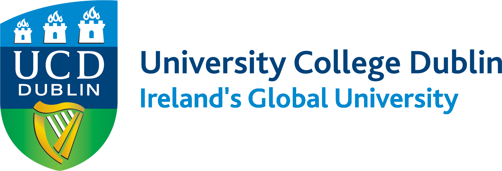
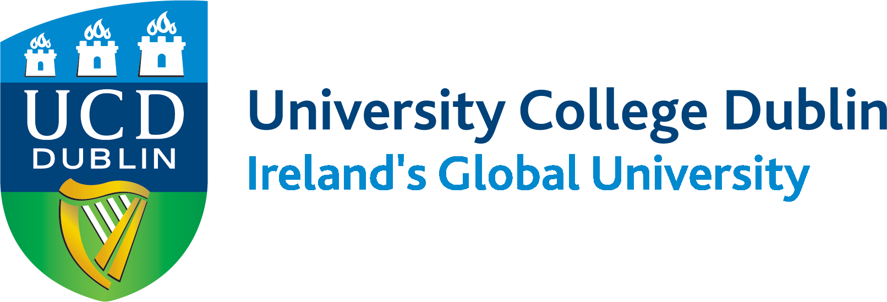
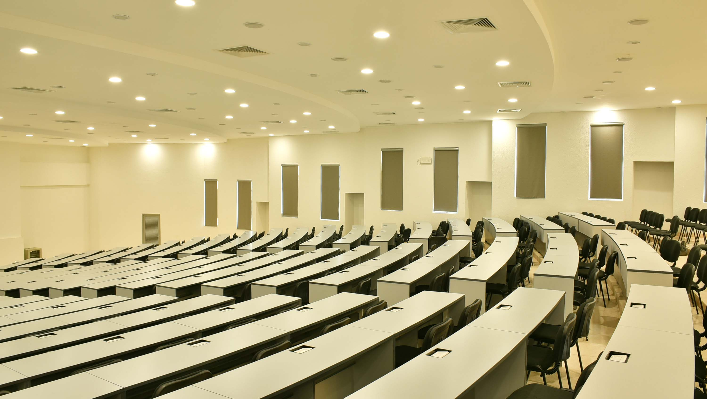
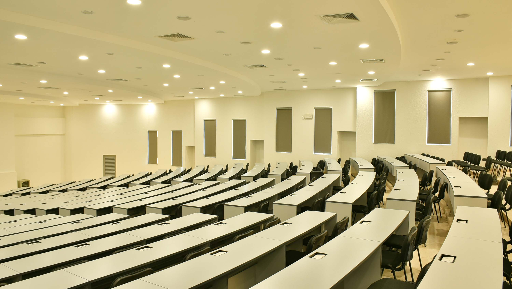
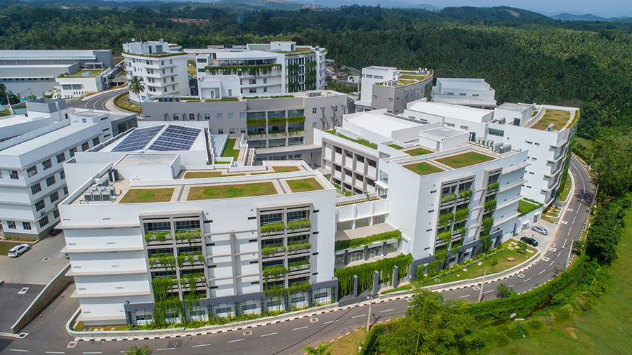
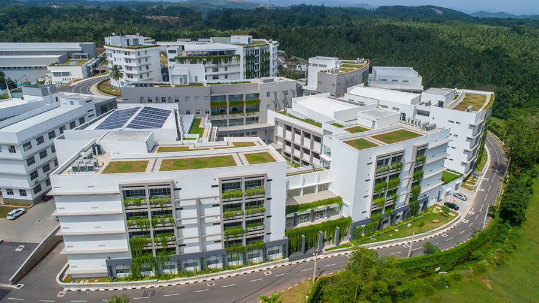

 NSBM prides itself on being a forward-thinking entity, with the constant drive to push boundaries. Thus, it moves onto Phase II of NSBM Green University acquiring more land in Pitipana, Homagama to deliver greater opportunities to its potential multitudes of students.
Along with the new infrastructure, the Faculty of Science, Faculty of Humanity, and Faculty of Law will be added to offer new academic programs to cater to the current trends in academia and its respective industry.
Adding on another 15 acres to NSBM's Phase 1 of 25 acres of sprawling space for its students, the new addition would encompass more amenities and facilities to house local and international students including, extended Car Parking facilities, Hostel facilities for over 1,000 students to ensure easy access and comfort, Multipurpose Conference Hall with over 1,500 seating capacity, a large Playground and scenic Walking paths surrounded by a Natural lake.
 

 

NSBM Green University is the first of its kind in South Asia.
We offer undergraduate and postgraduate programmes in the fields of Business, Computing, Engineering, Design and Science in an alternative and innovative approach to higher education.
We have designed our world-class degree programmes integrating leadership, ethics, global thinking, core management skills and leading-edge technological innovations.
NSBM is established under the State Ministry of Skills Development, Vocational Education, Research & Innovations as a fully Government owned institution.
NSBM Green University is the only body awarding degrees in Computing, Business, Engineering and Design Studies in a Green surrounding.
NSBM Green University Town
100% Government owned global level university
NSBM Green University Town is the first ever green university in South Asia and sets an example for the whole South Asia by paving the way for environmental sustainability.
The university is open for both national and international student community and it has turned a new chapter in Sri Lankan higher education.
NSBM Green University Town is established under the State Ministry of Skills Development, Vocational Education, Research and Innovations and it is renowned for its world-class academic offerings.
This state-of-the-art university offers nationally and internationally recognized, UGC approved degree programmes and foreign degree programmes in three faculties: Management, Computing and Engineering.


The student selection and the admission procedure of NSBM Green University is carried out independently by the university itself. NSBM offers two intakes annually.[24] The 1st intake usually starts in March, whereas the 2nd intake begins in October each year. The students need to apply directly to the university.[25]
The student selection is carried out based on the student admission policy of NSBM, considering the standard examination results and institutional requirements.
NSBM also offers admission to the students applied under the Interest Free Student Loan Scheme introduced by the State Ministry of Higher Education[26] in which the ministry manages the application and registration process.
National School of Business Management was founded in 2011 as the degree awarding university under the National Institute of Business Management to award undergraduate and post-graduate degrees.[10][11]
Followed by a series of government protocols, the approval was granted to set up a higher education institute named National School of Business Management (NSBM). It was registered as a limited company under the Companies Act No. 7 of 2007.[12] The first Board of Directors of the company was appointed in July 2011, consisting of 5 members.[13]
In the wake of the discussions about the location of the proposed institute, a land of 26 acres in Pitipana, Homagama was selected and later obtained in December 2011.[14] The NSBM Green University Town project's construction work officially began at an investment of 10.2 billion LKR[15] in 2013, after clearing government sanctions and approvals.[13] While the construction was underway, NSBM commenced its operations as a city campus.[13]
NSBM city campus was launched in Nugegoda with a modest organizational structure consisting of School of Business, School of Computing, Finance Division, and Administration Division.[13] On 25th February 2012, it officially began the education delivery process inaugurating the first set of students for the University College Dublin and the UGC approved degree programs.[13] Later the same year, the city campus expanded its presence with the addition of three new buildings in close proximity to the main building.
Over the period of the next four years since its inception, the city campus continued till it was moved to NSBM Green University Town premises. Along the way, more undergraduate and postgraduate degrees programs and new academic partnerships were added to the NSBM profile.[13] These comprise the Management, Computing, Engineering, and Design degrees offered by NSBM or affiliated with Plymouth University, UK, Victoria University, Australia and Limkokwing University of Creative Technology, Malaysia.[16][17]
The construction of the NSBM Green University Town was carried out by MAGA Engineering (Pvt.) Ltd[18] together with the design and consultation of Engineering Consultancy (Pvt.) Ltd.[19] On 26th October 2016, the newly constructed university complex was ceremonially declared open, concluding a construction project spanned over two years and ten months.[20]
NSBM is fully equipped with ample facilities for the convenience of our students.
Explore more about our Learning Management System (LMS).

| SPORT | PRACTICE VENUES | |
|---|---|---|
| Cricket | Recreational Center (Cricket Nets) |  |
| Badminton | Recreational Center (Badminton Courts) |  |
| Swimming | Swimming pool (Recreational Center |  |
| Chess | Faculty Of Computing B1 Floor (FOC) |  |
| athletics | Recreational Center (Grounds) |  |
| Basketball | Recreational Center (Basket Ball Courts ) |  |
Enter your Username and Password: